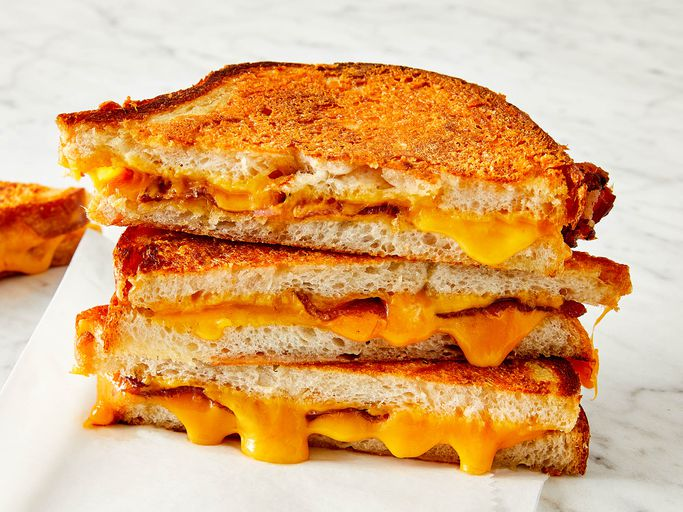

Grilled Cheese Recipe

Recipe for the best grilled cheese on the internet! (According to the Source)
Will take about 15 minutes, and even the most incompetent cooks like myself won't find any trouble following this recipe!
Ingredients
- 1/4 cup butter
- 1 cup freshly grated Parmigiano-Reggiano
- 8 slices cooked bacon
- 4 slices Cheddar cheese
- 8 slices sourdough bread
How to make
- Mesh together butter and Parmesan
- Make Sandwiches. Two slices of bacon and one slice of Cheddar each.
- Heat skillet over medium heat, use mesh to butter up sandwiches and place on skillet. Cook for about 3 minutes per side (until golden brown).
- Eat :)
Take me back